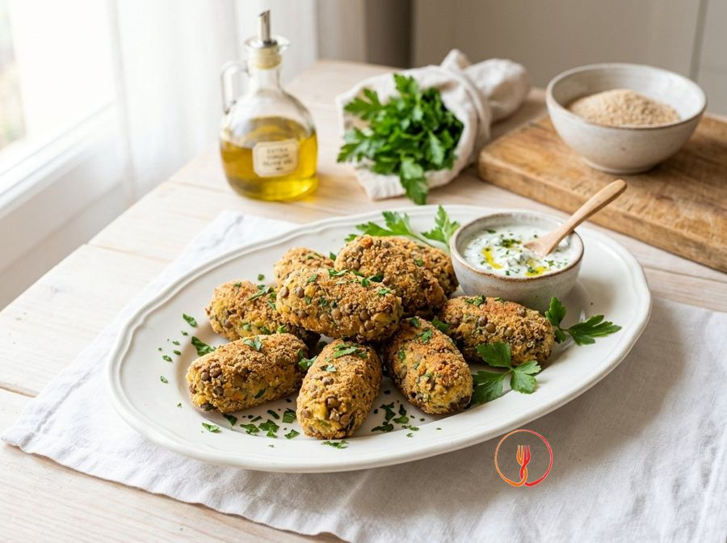

Crocchette di patate e lenticchie
Uno stuzzichino nutriente che trasforma i legumi in un finger food amato da tutta la famiglia grazie alla sua consistenza sfiziosa. Questa ricetta economica utilizza ingredienti base della dispensa italiana per creare un antipasto bilanciato e ricco di fibre.
Queste crocchette sono un'alternativa saporita e versatile, perfette per una cena in famiglia. La base di patate si sposa con la nota terrosa delle lenticchie, mentre il limone dona una freschezza inaspettata.
Ingredienti
- Patate a pasta gialla500 g
- Lenticchie cotte (lessate o in scatola, ben scolate)240 g
- Uova1 pz
- Pangrattato integrale100 g
- Olio extravergine d'oliva30 ml
- Prezzemolo fresco tritato10 g
- Scorza di limone biologico5 g
- Sale marino integrale3 g
Allergeni
Glutine, Uova
Procedimento
- Inizia lavando accuratamente 500 g di patate a pasta gialla e mettile in una pentola capiente coperte di acqua fredda leggermente salata. Porta a bollore e cuocile intere con la buccia per circa 25-30 minuti, verificandone la cottura con una forchetta che deve entrare senza resistenza. Otterrai una base amidacea perfetta e non acquosa, fondamentale per la tenuta delle crocchette. Il consiglio dello chef: cuoci le patate con la buccia per evitare che assorbano troppa acqua, mantenendo l'impasto sodo.
- Scola le patate e, mentre sono ancora calde, pelale con cura e passale immediatamente in uno schiacciapatate raccogliendo la purea in una ciotola capiente. Lascia che la purea intiepidisca per circa 10 minuti per evitare che il calore eccessivo coaguli l'uovo che aggiungerai in seguito. La consistenza deve essere liscia, soffice e priva di grumi. Il consiglio dello chef: non usare mai il frullatore a immersione per le patate, poiché romperebbe troppo gli amidi rendendo l'impasto colloso.
- Prendi 240 g di lenticchie già cotte, sciacquale sotto acqua corrente per eliminare residui di sale o liquido di governo e asciugale meticolosamente con carta assorbente. Preleva metà delle lenticchie e frullale grossolanamente con un mixer a immersione, lasciando l'altra metà intera per creare un contrasto di texture. Il risultato sarà un mix tra una crema legante e piccoli legumi interi che daranno struttura. Il consiglio dello chef: più le lenticchie sono asciutte, meno pangrattato dovrai usare, mantenendo la crocchetta più leggera.
- Nella ciotola con le patate, aggiungi le lenticchie (sia la crema che le intere), 1 uovo intero, 10 g di prezzemolo tritato, 5 g di scorza di limone, 3 g di sale e 40 g di pangrattato integrale. Lavora l'impasto vigorosamente con le mani per circa 2-3 minuti fino a quando tutti gli aromi saranno ben distribuiti e la massa risulterà compatta. Dovresti ottenere un composto malleabile che profuma di limone e prezzemolo. Il consiglio dello chef: aggiungi la scorza di limone solo alla fine per preservare gli oli essenziali volatili e mantenere il profumo intenso.
- Prepara una piccola ciotola d'acqua per inumidirti leggermente le mani e inizia a formare le crocchette prelevando circa 40-50 g di impasto alla volta. Modella delle forme cilindriche o a disco, simili a piccole noci schiacciate, cercando di renderle tutte della stessa dimensione per una cottura uniforme. Le crocchette devono apparire lisce e senza crepe sulla superficie. Il consiglio dello chef: non farle troppo grandi, altrimenti sarà difficile girarle in forno senza romperle.
- Versa i rimanenti 60 g di pangrattato integrale in un piatto piano e passa ogni crocchetta nel pane, premendo delicatamente con il palmo della mano per far aderire bene la panatura. Assicurati che ogni lato, inclusi i bordi, sia perfettamente coperto dal pangrattato per garantire la croccantezza esterna. Il risultato è una crocchetta uniformemente impanata e pronta per la doratura. Il consiglio dello chef: scuoti leggermente ogni pezzo dopo l'impanatura per eliminare l'eccesso di pane che brucerebbe in forno.
- Rivesti una teglia con carta forno e disponi le crocchette ben distanziate tra loro per permettere all'aria calda di circolare liberamente. Irrorale uniformemente con i 30 ml di olio extravergine d'oliva, magari aiutandoti con un pennello da cucina per una distribuzione più omogenea. Le crocchette appariranno lucide e pronte per subire la reazione di Maillard che darà colore e sapore. Il consiglio dello chef: il calore deve colpire ogni lato, quindi non affollare la teglia o le crocchette risulteranno molli.
- Inforna in forno ventilato già caldo a 200°C e cuoci per circa 20 minuti in totale. A metà cottura (dopo circa 10 minuti), gira le crocchette con estrema delicatezza usando una spatola per garantire una doratura uniforme su entrambi i lati. A fine tempo, le crocchette dovranno risultare croccanti al tatto e di un bel colore ambrato scuro. Il consiglio dello chef: accendi il grill negli ultimi 2 minuti per una croccantezza extra, ma controlla costantemente per evitare che il pangrattato integrale scurisca troppo.
Consigli
- Schiacciate le patate mentre sono ancora calde per ottenere un composto liscio, omogeneo e senza grumi.
- Scolate e sciacquate molto bene le lenticchie per evitare che l'eccesso di liquido renda l'impasto troppo molle.
- Passate le crocchette nel pangrattato integrale premendo leggermente per far aderire bene la panatura prima della cottura.
Varianti
- Sostituite il prezzemolo con della menta fresca o dell'erba cipollina per un aroma più vivace.
- Aggiungete un cucchiaio di parmigiano grattugiato all'impasto per ottenere una sapidità più decisa.
Valori nutrizionali (stima)
| Per porzione (195 g) | Per 100 g | |
|---|---|---|
| Energia | 1390 kJ / 332 kcal | 713 kJ / 170 kcal |
| Proteine | 13.2 g | 6.8 g |
| Carboidrati | 48.5 g | 24.9 g |
| di cui zuccheri | 2.1 g | 1.1 g |
| Grassi | 9.8 g | 5.0 g |
| di cui saturi | 1.6 g | 0.8 g |
| Fibre | 9.2 g | 4.7 g |
| Sale | 0.85 g | 0.4 g |
Valori stimati con l'AI su dati medi CREA / USDA: sono indicativi e non sostituiscono il parere di un medico o di un nutrizionista.
Apri la ricetta nell'app per la lista della spesa, le schede ingredienti e i negozi vicini.